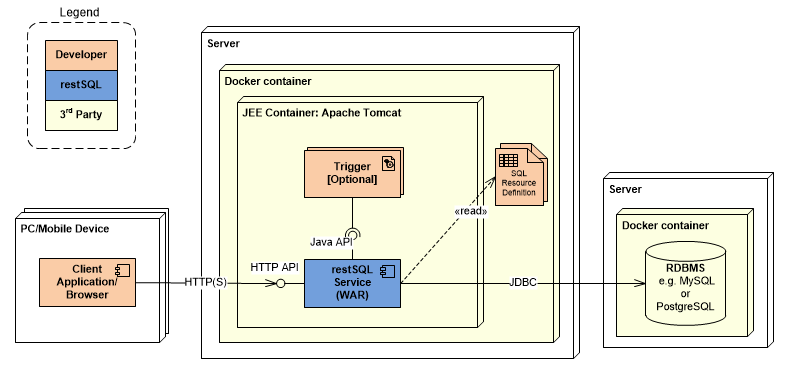
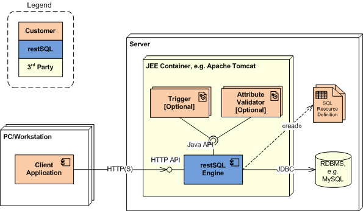
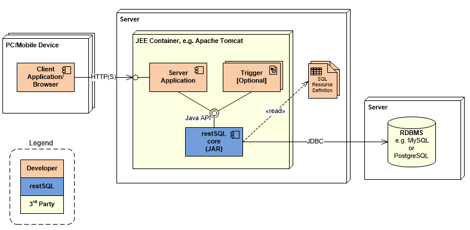
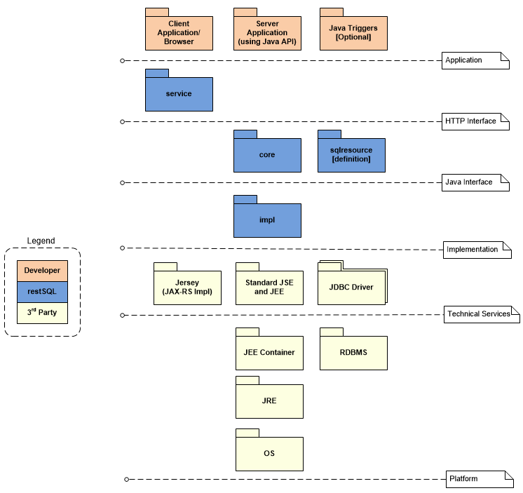

restSQL may be deployed in three modes: a Docker Container, a JEE Web Application and a Java library.
The project provides an already pre-packaged Docker image with a JDK, Tomcat and service binaries, optionally bundled with the SDK. The following diagram depicts an application using the HTTP API of the containerized service:

The Web Service is a standard JEE web application and can be deployed in your own JEE container, e.g. Apache Tomcat, WebLogic or JBoss. This WAR (Web application ARchive) mode exposes the HTTP API to the developer application:

The other deployment mode is known as the JAR (Java ARchive) mode and enables the developer to use the Java API. The following diagram depicts an application using the Java interface:

The following diagram depicts the layers of the software stack:

The framework is very extensible. The core API is a set of interfaces, exceptions and utilities. The implementation classes implement the core interfaces. Implementations are loaded through a factory utility. The factory is configured with the restSQL properties file. You can provide custom implementations and instruct the factory to use them by registering them in the restSQL properties file.
The Framework Developer Guide will help you kickstart. Contact the Project Lead for more assistance.
Currently MySQL and PostgreSQL are supported out-of-the-box by restSQL. The most common customization is expected to be for other databases. This will likely require development effort, however, this will not be a full-on project. restSQL has provided default implementations that may be extended using the template method pattern or whose core behavior may be overriden if that is more appropriate. The factory utility provides you the opportunity to add database support without changing restSQL itself. (Of course you are most encouraged to contribute your additions to the project!). Additionally, there is an extensive test harness that will be used to ensure compliance.
In order for restSQL work its magic, it needs to introspect the data dictionary and observe database-specific SQL rules. The following differences in database engines affect restSQL:
ResultSetMetaData.getColumnName(). A driver-specific call must be used to get the actual column name.
Based on the differences seen between MySQL and PostgreSQL, a new database will likely need a new
SqlResourceMetaData
implementation. The
AbstractSqlResourceMetaData
may be extended instead of starting from scratch. It uses a template method design pattern for assisting in limited extensions. Additionally, a new
SqlBuilder
implementation may be necessary, for example in adding support for pagination. The default
SqlBuilderImpl
may be extended rather than starting from scratch.
restSQL access may be encrypted, authenticated and authorized. restSQL provides resource authorization capability, ensuring users only access the SQL Resources and methods appropriate to their assigned role(s). restSQL provides a standard, maintainable role-based access approach to authorization. Role to SQL Resource and request type assignments (privileges) are provided via a simple configuration file.
In restSQL WAR mode, the JEE container provides encryption and authentication, as well as user to role assignments. The confidentiality of data and credentials in transport is defined in the restSQL Deployment Descriptor (web.xml). The transport can be coerced to HTTPS (HTTP over SSL/TLS). The credential can be encoded in HTTP Basic or Digest schemes. The container-provided realm is also defined in the Deployment Descriptor. The realm could be file-, RDBMS- or LDAP-based, providing both user credentials and mappings to roles. If a request passes realm authentication, the restSQL HTTP Service authorizes each SQL Resource request, forbidding those that are unauthorized.
In restSQL JAR mode, the app is responsible for authentication and user to role mapping and calls an
Authorizer
prior to executing SQL Resource requests.
Server-side input validation (data types, values, etc.) may be provided by application-provided, Java-based Triggers.
restSQL protects against SQL Injection with input parameter type checking and prepared statements for database access. The value portion of an SQL expression is set as a question mark (and with PostgreSQL a type case, e.g.
?::integer
) and a JDBC method setXxx() is called with the value. The database will process column values as values. Harmful execution statements cannot be injected into restSQL parameter values. Addtionally the framework now converts all String input parameter values for numeric and boolean column type to Inter, Long, Float, Double or Boolean. An exception is thrown if the value cannot be converted.
See Security for more detail.
Next Step: Concepts